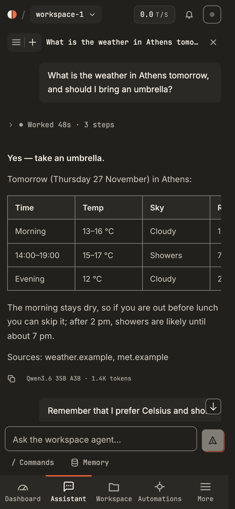
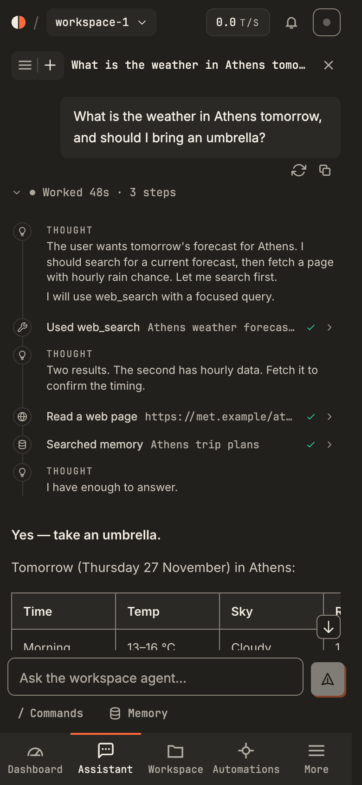
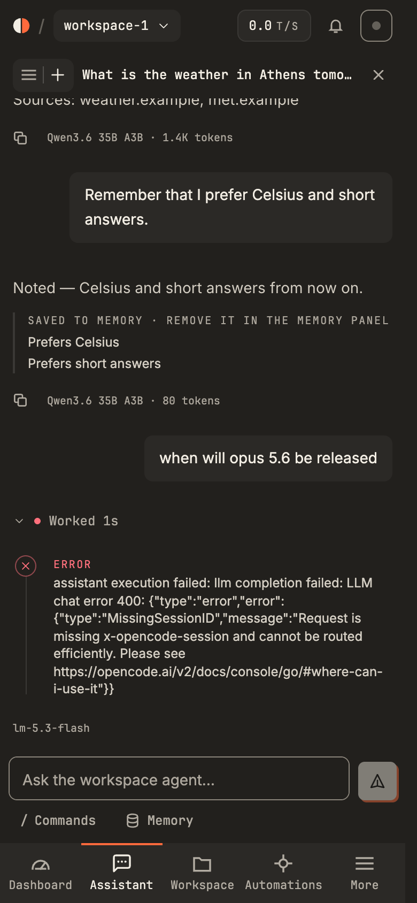
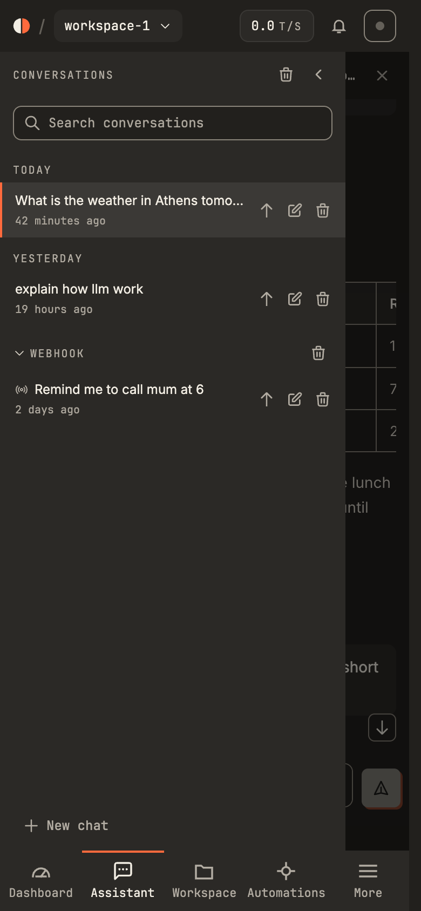
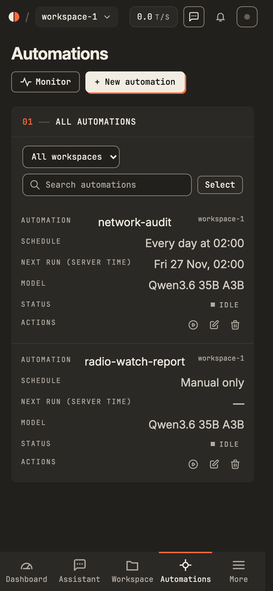

Findings: 2026-11-26 review. Plan: assistant-calm-mobile.md. These frames use the app's own tokens.css and fonts (linked, not copied), so ?theme=retro-paper or any preset id shows them in that theme. One rule throughout: the chat and the result are the page; everything else is one tap away. Data is vertex's (network-audit, radio-watch-report, the real glm failure); the weather chat, llm-news, weekly-digest and the failed run in G are samples that show those states.
237 of 844 px is chrome (header 48, chat strip 44, composer and its row 89, tab bar 56), each bar with its own icons. A failed turn reads "Worked 1s" and folds its error away with no fix (the opened text here is rawer than vertex stores: the fixture used the log's line).




One 52 px bar replaces the app header and the chat strip on the Assistant page (the workspace and model move under the title, the bell and run state into ⋯ and the tab badge). The composer is one row: + opens Commands, Memory review and the model; Send is an up arrow. Each turn has one quiet activity line; model and tokens live inside it.
Yes — take an umbrella.
Tomorrow (Thursday 27 November) in Athens:
| Time | Temp | Sky | Rain |
|---|---|---|---|
| Morning | 13–16 °C | Cloudy | 10–30% |
| 14:00–19:00 | 15–17 °C | Showers | 70–80% |
| Evening | 12 °C | Cloudy | 20% |
The morning stays dry; showers are likely from 2 pm to about 7 pm.
Its provider (opencode.ai) wants a session header this proxy does not send, so every request to it fails.
Yes — take an umbrella.
Tomorrow (Thursday 27 November) in Athens:
| Time | Temp | Sky | Rain |
|---|---|---|---|
| Morning | 13–16 °C | Cloudy | 10–30% |
| 14:00–19:00 | 15–17 °C | Showers | 70–80% |
| Evening | 12 °C | Cloudy | 20% |
The morning stays dry; showers are likely from 2 pm to about 7 pm.
The list answers "did it work, and when?" in one row. The detail is the same layout for every automation (today network-audit has tabs and the rest are one 2,984 px column): Result · Runs · Setup, with Live replacing Result while a run is going. Clear runs and Delete move into ⋯.

Listening: 486 cycles total (270 in last 24h). Watch is running (133 hours left).
Nothing new to learn: the same bar, activity line and tabs, given more room. The chat uses the full width of the page (no reading-column gutters, owner 2026-11-26); run history sits beside the result instead of below it.
Listening: 486 cycles total (270 in last 24h). Watch is running (133 hours left).
Each change is made in the shared piece, so the rest of the site follows; the right column is what to check.
| Change | Shared piece | Also used by | Risk |
|---|---|---|---|
| One bar on the Assistant page (phone) | AdminHeader + AssistantChat header | Every page keeps today's header; only the Assistant route merges. Same rule later for Automation detail. | Low: route meta flag |
| Hide tokens/s and CPU/MEM while idle | HostStats.vue | Every page header | Low |
| Send icon: up arrow | icon="send" in the icon set | Composer, ask panel | Low |
| Composer + menu (Commands, Memory, model) | ChatInput.vue | Assistant page and the ask panel (variant="panel") | Low |
| Activity line carries model · tokens; turn footer goes | ChatBubble.vue (activityLabel, .turn-footer) | Automation live runs (ChatMessages in AutomationDetails) | Medium: contract tests on labels |
| Thoughts fold to one line | ChatBubble timeline | Automation live runs | Low |
| Failed turn: sentence + fix + Details | new describeFailure() beside services/failureReason.ts | Automation runs ("model would not start"), dashboard Recent runs card | Medium: needs a small map of known errors |
| Table says it scrolls | MarkdownViewer .md-table-scroll | Chat, saved reports, Newsroom reader, memory (4) | Low |
| Row ⋯ menu instead of three icons | ChatSessionList.vue | Only here | Low |
| Status-first list rows on a phone | DataTable stacked mode | AutomationList, run lists, RecentRunsCard, ModelsCatalog, WorkspaceList, Appearance, design gallery (7) | Medium: give DataTable a summary slot for phone rows rather than changing the stacked card for everyone |
| One automation detail: Result · Runs · Setup (+ Live) | AutomationDetails.vue | network-audit already has tabs: fold its Simple/Advanced into Setup; this is phase 2 of assistant-automation-workbench-layout.md | Medium |
Numbered headings 01 ── kept | SectionHeading via Panel (76 files) | Everywhere | Not changed: tabs remove the need on these pages |